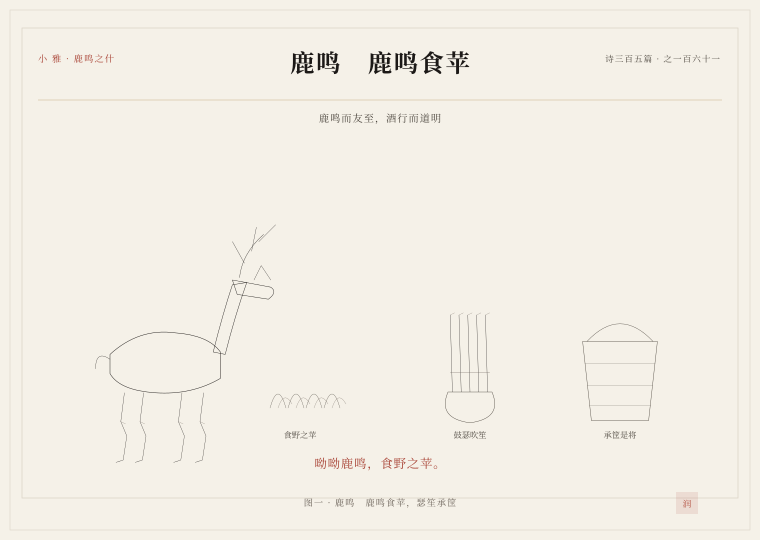
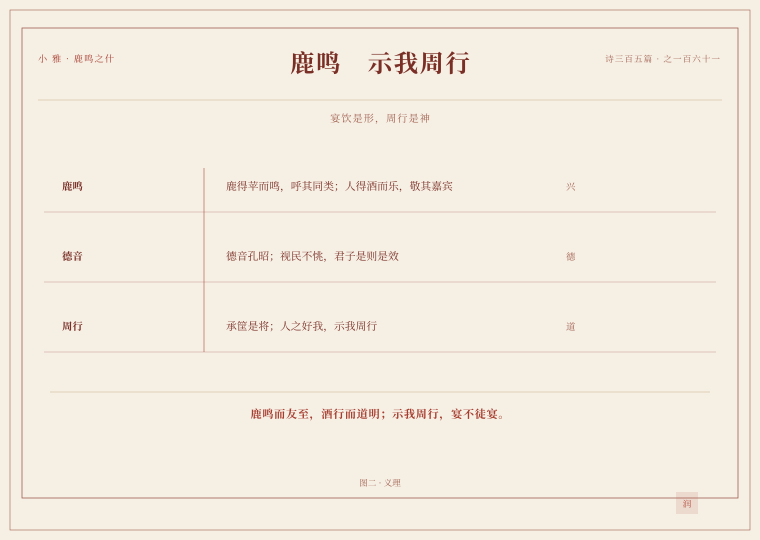

第一百六十一篇 鹿鸣
小雅 · 鹿鸣之什 SJ161
朗读 · 普通话
依经文原文朗读，章次不读出；配古琴底乐，不改速、不加拖腔。全库同一音色（豆包 TTS），非播音员录制。
一 解题
诗三判：
- 谁在说：宴飨之主，或代主人作乐者。堂上有嘉宾，庭中有瑟笙，筐篚中有币帛；主人一面劝酒，一面问德。
- 说什么事：三章皆以「呦呦鹿鸣，食野之某」起兴。鹿得草则鸣，呼其同类；人有酒则乐，敬其嘉宾。由饮食而入德音，由德音而入人心。
- 为何编在此：小雅首篇。国风终于豳，小雅始于鹿鸣；风以一国之事，雅以天下之事。
首篇不言征伐、不言政令，而言宴嘉宾，正是「治自近始」。
《毛序》：「《鹿鸣》，燕群臣嘉宾也。既饮食之，又实币帛筐篚以将其厚意，然后忠臣嘉宾得尽其心矣。」
朱子《诗集传》：「兴也。呦呦，声之和也。苹，藾萧也。筐，所以盛币帛者也。将，行也。承筐是将，所以酬嘉宾也。周行，大道也。」二章：「蒿，菣也。孔，甚。昭，明也。恌，偷薄也。敖，游也。」三章：「芩，草名。湛，乐之久也。」
本库的看法：《鹿鸣》不是一首劝酒诗，是一首「以饮食立道」的诗。
鹿鸣求友，是生物之相呼；人燕嘉宾，是礼义之相敬。诗中三递：一章「示我周行」，是宾告主以大道；二章「德音孔昭」，是主信宾之令名；三章「燕乐嘉宾之心」，是礼成而心通。宴饮是形，周行是神。
须辨：苹是藾萧，不是苹果；蒿是菣，不是艾；芩是草名，不是黄芩；周行是大道，不是周朝的路；嘉宾是群臣嘉宾，不是泛称客人。断语：鹿鸣而友至，酒行而道明；示我周行，宴不徒宴。
先辨五事：「苹」是藾萧，不是苹果；「蒿」是菣，不是艾蒿；「芩」是草名，不是黄芩；「周行」是大道，不是周京的道路；「嘉宾」是群臣嘉宾，不是泛指来客。
二 经文
第一章
呦呦鹿鸣，食野之苹。我有嘉宾，鼓瑟吹笙。
吹笙鼓簧，承筐是将。人之好我，示我周行。
第二章
呦呦鹿鸣，食野之蒿。我有嘉宾，德音孔昭。
视民不恌，君子是则是效。我有旨酒，嘉宾式燕以敖。
第三章
呦呦鹿鸣，食野之芩。我有嘉宾，鼓瑟鼓琴。
鼓瑟鼓琴，和乐且湛。我有旨酒，以燕乐嘉宾之心。
三 韵读
- 一章：鸣、苹、笙、簧、将、行，耕、阳、庚相通。声和而扬，收于行。
- 二章：蒿、昭、效、敖，宵、药相叶。声明而远，收于敖。
- 三章：芩、琴、湛、心，侵部相叶。声沉而久，收于心。
读法：一章「鹿鸣—鼓瑟—承筐—周行」四顿，声由外入内；二章换「蒿」，声转明亮，落在「德音」；三章换「芩」，声转沉，落在「心」。三章三草，不是换韵，是换境：由食入德，由德入心。
四 字义与名物
- 呦呦：鹿鸣声之和。苹：藾萧，野草。嘉宾：群臣与宾客。瑟、笙：弦、竹之乐。簧：笙中之簧。承筐：奉筐。将：行、送。好我：爱我、亲我。周行：大道。
- 蒿：菣，蒿类。德音：善言、令名。孔昭：甚明。恌：偷薄、轻佻。则：法则。效：效法。旨酒：美酒。式：发语词。燕：宴饮。敖：游乐。
- 芩：草名，一说蔓生。湛：乐之久、深。燕乐：安乐、宴乐。
五 今译
一章：鹿儿呦呦地鸣，吃着野地的藾萧。我有嘉宾在堂，弹瑟吹笙。吹笙振簧，奉上币帛之筐。嘉宾爱我，把大道示我。
二章：鹿儿呦呦地鸣，吃着野地的蒿。我有嘉宾在堂，德音甚明。他待民不轻薄，君子都效法他。我有美酒，嘉宾宴饮游乐。
三章：鹿儿呦呦地鸣，吃着野地的芩。我有嘉宾在堂，弹瑟弹琴。瑟琴相和，和乐深长。我有美酒，用来安乐嘉宾的心。
六 章旨
- 一章：鹿鸣食苹，是「得所」；鼓瑟承筐，是「有礼」；「示我周行」，是宴中之道。
- 二章：鹿鸣食蒿，是「得味」；德音孔昭，是「有德」；「视民不恌」，是德之验。
- 三章：鹿鸣食芩，是「得安」；瑟琴和乐，是「有心」；「燕乐嘉宾之心」，是礼之成。
七 诗教
- 饮食不是道：饮食是道的载体。主人有酒有乐有币帛，若止于此，只是养口体；有「示我周行」，才成燕礼。
- 德音不是虚名：「视民不恌」四字，把德音落到待民上；待民轻薄，则德音不昭。
- 宴乐不是放纵：「和乐且湛」而终以「燕乐其心」，乐在心上，不在酒上；心不乐，则宴徒费。
八 分寸与边界
- 不把「鹿鸣」读成猎鹿：鹿鸣是兴，取「得草而呼类」；读成田猎，则全诗之温厚尽失。
- 不把「苹」读成苹果：苹是藾萧；认错草，则「食野」无根。
- 不把「周行」读成周朝的路：周行是大道理路；读成地名，则「示我」无着。
- 不把「嘉宾」读成泛客：嘉宾是群臣嘉宾，燕礼有等；泛称客人，则礼失其位。
九 存疑
- 诗旨：毛序「燕群臣嘉宾」，朱子从之；一说兼「宾兴」「乡饮酒」。本库从燕礼，而以为可通于宾兴。
- 「苹」：毛传「藾萧」，朱子同；一说水苹。从藾萧。
- 「芩」：一说蔓草，一说黄芩。从草名，不指实。
- 「示我周行」：一说宾告主，一说主告宾。从宾告主，以见「嘉宾之益」。
十 跨典
- 《礼记·乡饮酒义》「主人拜迎宾于庠门之外」；此篇承筐、鼓瑟，正见燕礼之实。
- 《论语》「有朋自远方来，不亦乐乎」；鹿鸣求友，正是此乐之礼化。
- 《尚书》「若作和羹，尔惟盐梅」；宴以和，政亦以和。
十一 双卡与图
六对：
| 苹（藾萧） |
苹（苹果） |
| 蒿（菣） |
蒿（艾） |
| 芩（草名） |
芩（黄芩） |
| 周行（大道） |
周行（周朝道路） |
| 恌（偷薄） |
恌（挑逗） |
| 燕乐其心（礼成心通） |
燕乐其心（纵酒） |

图一 · 鹿鸣 鹿鸣食苹，瑟笙承筐

图二 · 鹿鸣 示我周行，宴不徒宴